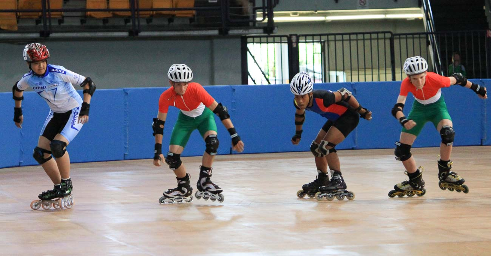

My hobbies
Gymnastics
Gymnastics is a type of sport that includes physical exercises
requiring balance, strength, flexibility, agility, coordination,
and endurance. The movements involved in gymnastics contribute to
the development of the arms, legs, shoulders, back, chest, and
abdominal muscle groups. Gymnastics evolved from exercises used
by the ancient Greeks that included skills for mounting and
dismounting a horse, and from circus performance skills.
.jpg)
Skating
Roller skating, the traveling on surfaces with roller skates
Inline skating, traveling on surfaces with skates having one line of wheels
Freestyle slalom skating, a field of inline skating that involves performing tricks around a straight line of equally spaced cones
Vert skating, riding inline skates on a vert ramp
Aggressive inline skating, inline skating executed on specially designed inline skates with focus on grinding and spins
Inline speed skating, the roller sport of racing on inline skates
Artistic roller skating, a sport similar to figure skating but where contestants run on roller skates instead of ice skates
Road skating
Skateboarding, an action sport which involves
riding and performing tricks using a skateboard

Badminton
Badminton is a racquet sport played using racquets to hit a shuttlecock
across a net. Although it may be played with larger teams, the most common forms of the
game are "singles" (with one player per side) and "doubles" (with two players per
side). Badminton is often played as a casual outdoor activity in a yard or on a beach; formal games are played on a rectangular indoor court. Points are scored by striking the shuttlecock with the racquet and landing it within the other team's half of the court.
Each side may only strike the shuttlecock once before
it passes over the net. Play ends once the shuttlecock
has struck the floor or ground, or if a fault has been
called by the umpire, service judge, or (in their absence) the
opposing side.[1]